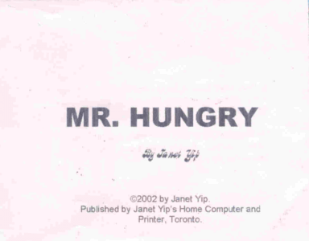
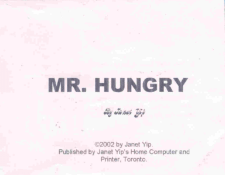

©2002 Janet
Visit The Werld of Love
This is my tribute to the Mr. Men books I used to read when I was young. I made this for my Writer's Craft class (June 2002). We were supposed to do a children's book, but I didn't want to do yet another silly alphabet book ("A was an actor... B was a ballet dancer...") Knowing that the mark I would get in class would have no effect on my university entrance in September, I decided to go ahead with this, since it'd be much more fun.
And it WAS a lot of fun, so now I share this with you.

©2002 Janet
Visit The Werld of Love